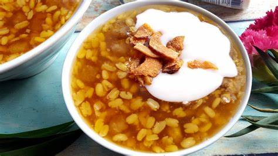
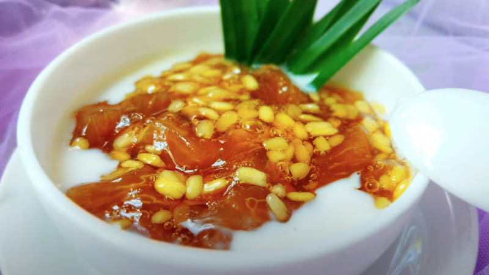
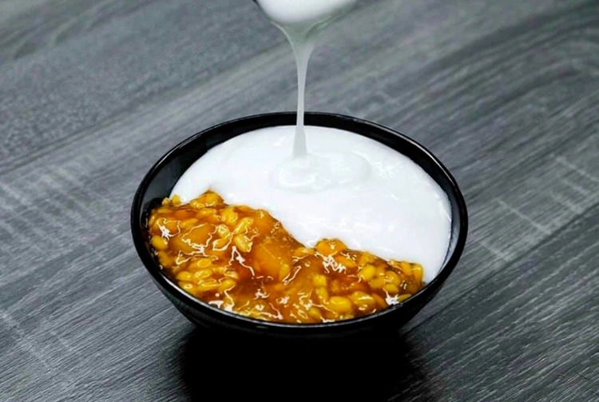

Chè Bưởi là món chè truyền thống nổi tiếng của miền Nam Việt Nam, đặc
trưng bởi sự kết hợp tuyệt vời giữa cùi bưởi giòn sần sật, đậu xanh bùi
bùi và nước cốt dừa béo ngậy, thơm lừng. Món chè này không chỉ thanh
mát, giải nhiệt mà còn mang hương vị độc đáo, hấp dẫn, rất được ưa
chuộng trong những ngày nóng bức.



Nguyên liệu
Cùi bưởi: 200g (chọn cùi bưởi da xanh hoặc bưởi năm
roi, loại trắng, dày, không bị đắng)
Đậu xanh đã bóc vỏ: 100g (đậu xanh cà, giúp chè bùi
và dễ nấu hơn)
Bột năng: 100g (dùng để áo cùi bưởi và tạo độ sánh
cho chè)
Đường: 150g (đường cát trắng, điều chỉnh tùy theo
khẩu vị ngọt)
Nước lọc: 1 lít (để nấu chè)
Muối: Một ít (khoảng 1 muỗng cà phê, dùng để sơ chế
cùi bưởi)
Nước cốt dừa: 200ml (tùy chọn, để làm nước cốt dừa ăn
kèm, nên dùng loại cốt dừa tươi hoặc đóng hộp chất lượng cao)
Lá dứa (lá nếp): 2-3 lá (tùy chọn, để tạo mùi thơm
cho nước cốt dừa hoặc chè)
Cách làm
Bước 1: Sơ chế cùi bưởi
Gọt bỏ phần vỏ xanh bên ngoài và phần ruột trắng xốp bên trong của
cùi bưởi. Chỉ lấy phần cùi trắng dày.
Cắt cùi bưởi thành hạt lựu nhỏ hoặc miếng vừa ăn (khoảng 1-1.5
cm).
Cho cùi bưởi vào một tô lớn, thêm 1 muỗng cà phê muối. Dùng tay
bóp thật mạnh và đều khoảng 5-7 phút cho cùi bưởi ra hết nước đắng
và nhựa.
Xả cùi bưởi dưới vòi nước chảy nhiều lần cho đến khi nước trong và
cùi bưởi không còn vị đắng. Vắt thật khô nước.
Luộc sơ cùi bưởi trong nồi nước sôi khoảng 2-3 phút, sau đó vớt
ra, xả lại với nước lạnh và vắt thật khô một lần nữa. Bước này
giúp loại bỏ hoàn toàn vị đắng và làm cùi bưởi giòn hơn.
Bước 2: Chuẩn bị đậu xanh
Đậu xanh đã bóc vỏ rửa sạch. Ngâm đậu xanh trong nước lạnh khoảng
2-3 giờ (hoặc ngâm nước ấm 30 phút) cho đậu nở mềm.
Vớt đậu xanh ra, để ráo. Cho đậu xanh vào nồi hấp hoặc nồi cơm
điện, hấp chín mềm (khoảng 15-20 phút). Đậu xanh sau khi hấp phải
bùi và tơi.
Bước 3: Làm cùi bưởi giòn sần sật
Cho cùi bưởi đã sơ chế và vắt khô vào một tô. Thêm 30g đường vào,
trộn đều và để khoảng 15-20 phút cho đường tan và ngấm vào cùi
bưởi.
Khi đường đã tan, cho từ từ 50g bột năng vào tô cùi bưởi, trộn đều
để bột năng áo đều quanh từng miếng cùi bưởi. Đảm bảo mỗi miếng
cùi bưởi đều được phủ một lớp bột mỏng.
Đun một nồi nước sôi. Cho cùi bưởi đã áo bột vào luộc. Khi cùi
bưởi nổi lên trên và chuyển màu trong là đã chín. Vớt ra, cho ngay
vào tô nước đá lạnh để cùi bưởi giòn và không bị dính vào nhau.
Sau khi cùi bưởi nguội, vớt ra để ráo nước.
Bước 4: Nấu chè bưởi
Trong một nồi lớn, cho 1 lít nước lọc và 120g đường còn lại vào.
Đun sôi và khuấy đều cho đường tan hoàn toàn.
Khi nước đường sôi, cho cùi bưởi đã luộc giòn vào nồi, khuấy đều.
Tiếp theo, cho đậu xanh đã hấp chín vào nồi, khuấy nhẹ nhàng để
đậu xanh không bị nát.
Hòa tan 50g bột năng còn lại với khoảng 100ml nước lọc để tạo
thành hỗn hợp sệt. Từ từ đổ hỗn hợp bột năng vào nồi chè, vừa đổ
vừa khuấy đều tay để chè có độ sánh đặc mong muốn và không bị vón
cục.
Đun thêm khoảng 2-3 phút cho chè sôi nhẹ trở lại và bột năng chín
hoàn toàn, chè có độ trong. Tắt bếp.
Bước 5: Làm nước cốt dừa ăn kèm (tùy chọn)
Trong một nồi nhỏ, cho 200ml nước cốt dừa, 1-2 muỗng canh đường
(tùy khẩu vị) và một chút muối vào.
Nếu có, thêm 2-3 lá dứa (lá nếp) đã rửa sạch, buộc gọn vào nồi để
tạo mùi thơm.
Đun hỗn hợp trên lửa nhỏ, khuấy đều cho đường tan. Khi nước cốt
dừa vừa sôi lăn tăn và hơi sánh lại thì tắt bếp. Không đun sôi quá
lâu để tránh cốt dừa bị tách dầu.
Bước 6: Hoàn thiện và thưởng thức
Múc chè bưởi ra bát.
Rưới một lượng nước cốt dừa vừa đủ lên trên bát chè.
Có thể dùng nóng hoặc lạnh đều ngon. Chè bưởi ngon hơn khi được
làm lạnh.
Mẹo nhỏ để Chè Bưởi ngon hơn:
Chọn cùi bưởi: Chọn bưởi da xanh hoặc bưởi năm roi
có cùi dày, trắng, không bị đắng.
Sơ chế cùi bưởi kỹ: Đây là bước quan trọng nhất để
chè không bị đắng. Bóp muối và xả nước nhiều lần, sau đó luộc sơ và
vắt khô là chìa khóa.
Đậu xanh: Ngâm đậu xanh đủ thời gian và hấp chín
tới để đậu bùi và tơi, không bị nát khi trộn vào chè.
Áo bột năng: Đảm bảo cùi bưởi được áo đều bột năng
để khi luộc có độ giòn sần sật.
Nước cốt dừa: Nước cốt dừa tươi sẽ cho hương vị
thơm béo tự nhiên nhất. Khi nấu nước cốt dừa, không đun sôi quá lâu
để tránh bị tách dầu.
Độ sánh của chè: Điều chỉnh lượng bột năng khi nấu
chè để đạt được độ sánh mong muốn. Nếu muốn chè đặc hơn, có thể thêm
chút bột năng pha loãng.
Làm lạnh: Chè bưởi ngon nhất khi được làm lạnh hoàn
toàn.
Thêm hương vị: Bạn có thể thêm một chút tinh dầu
hoa bưởi vào chè hoặc nước cốt dừa để tăng thêm hương thơm đặc
trưng.
Bình luận và Đánh giá
Đánh giá của bạn
Chưa có bình luận nào.